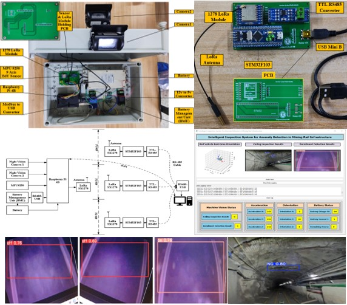
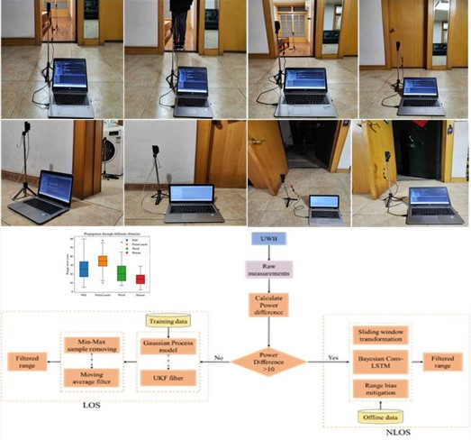
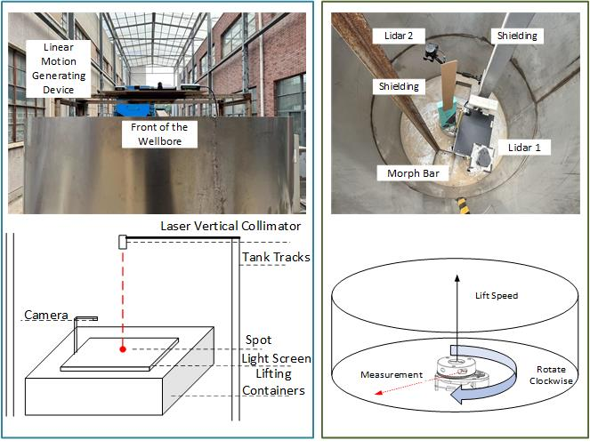
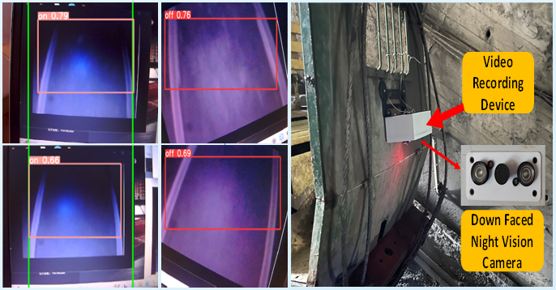
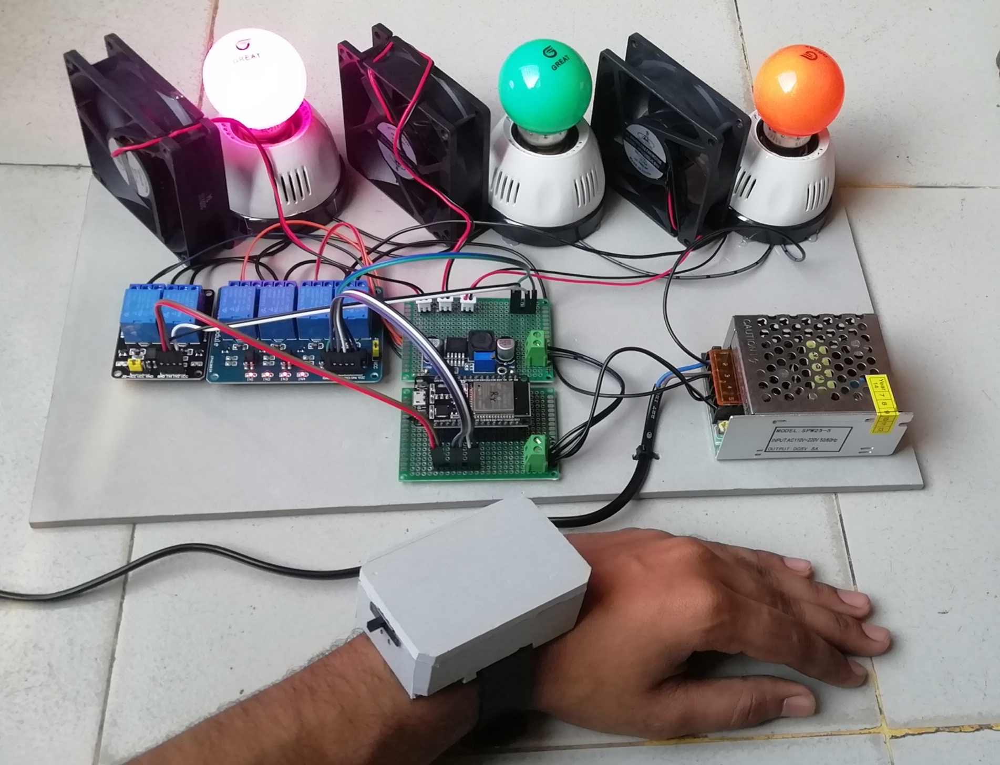
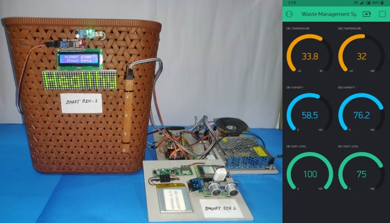
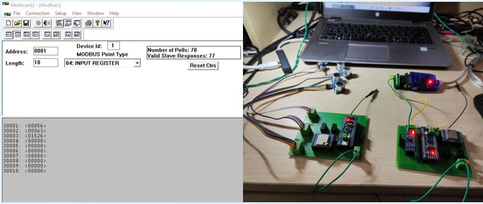
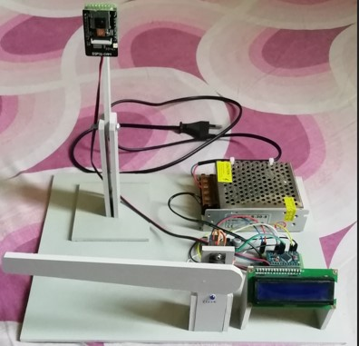
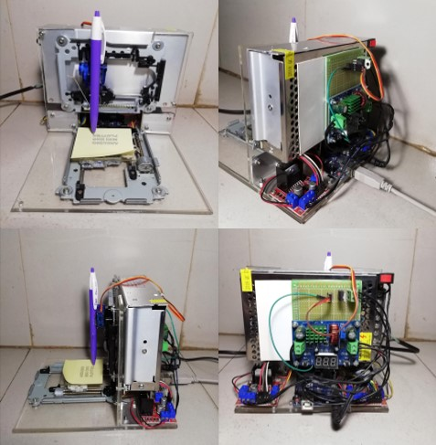

Embedded Systems
STM32 HAL, ESP32, Arduino, Raspberry Pi, PlatformIO, Keil MDK, ST-LINK
.jpg)
Embedded systems & machine vision engineer
I design edge-AI and embedded systems that turn sensor and camera data into dependable, real-time decisions.
My work spans computer vision, firmware, IoT, robotics, and industrial automation, from deploying YOLO models on Raspberry Pi to building STM32-based acquisition and control systems.
Technical expertise
Core capabilities developed through research, industrial automation, and hands-on prototyping.
STM32 HAL, ESP32, Arduino, Raspberry Pi, PlatformIO, Keil MDK, ST-LINK
C, C++, Python
OpenCV, YOLO, SSD, GoogLeNet, embedded AI, machine vision
NumPy, Pandas, Scikit-learn, Matplotlib
Circuit design, PCB layout, soldering, prototyping, troubleshooting, EasyEDA, Proteus, Flux.ai
Internet of Things, robotics, embedded machine learning, automation
Background
2022–2025
China University of Mining and Technology
Research specialization in Embedded Systems and Machine Vision
Chinese Government Scholarship (CSC) · Fully funded Master's scholarship
2018–2021
East Delta University
Dean's List · Summer 2020 and Fall 2020
2013–2017
Chittagong Polytechnic Institute
2013
Chittagong Municipal Model High School & College
Although I ranked among the top 22 of 325 Business Studies students, I realized that my strongest interests lay in science and engineering. Inspired by Discovery Channel programs about satellites and industrial automation, I chose a polytechnic pathway to begin building the technical foundation for that career.
Oct 2022–Jun 2025
China University of Mining and Technology
Deployed edge-AI vision models, developed STM32 firmware, designed research PCBs, and analyzed sensor data.
Feb 2020–Mar 2021
OPSEED CO., (BD) LTD
Delivered production-line automation, safety improvements, PCB fault analysis, and quality-control equipment.

Problem: Underground mine rail systems need early warning of ceiling hazards and derailment.
Approach: Built a Raspberry Pi inspection unit using dual cameras, YOLOv5n, an MPU9250 IMU, LoRa, CRC checking, and MODBUS integration.
Result: Achieved 97% ceiling-hazard accuracy and derailment classification with 96% precision and 98% recall.

Problem: UWB ranging loses accuracy in multipath and non-line-of-sight environments.
Approach: Combined Gaussian Process bias correction with a Bayesian Conv-BLSTM and spatial-temporal attention.
Result: Produced a robust LOS/NLOS mitigation method with uncertainty estimation, published in Mathematics.

Problem: Conventional shaft inspection cannot provide timely warning of deformation and alignment hazards.
Approach: Integrated CMOS cameras, LiDAR, laser collimation, and ROS-based processing.
Result: Validated deformation, perpendicularity, and vibration measurements for intelligent shaft monitoring.

Problem: Dust, humidity, and debris can make ground-level derailment sensors unreliable in mine shafts.
Approach: Deployed YOLOv5n and OpenCV on Raspberry Pi for remote visual track-state detection.
Result: Demonstrated real-time on-track and off-track classification on an edge device.

Problem: Biofloc farms require continuous water-quality monitoring and timely intervention.
Approach: Combined IoT sensors, cloud monitoring, and a decision-tree regression model.
Result: Predicted water condition with 79% experimental accuracy and delivered readings through an Android interface.

Problem: Home automation needs location-aware control without requiring manual input.
Approach: Classified room-level Wi-Fi RSSI fingerprints with a decision tree deployed on ESP32.
Result: Achieved 92% location-classification accuracy for automatic appliance control.

Problem: Waste bins need hygienic operation and timely collection.
Approach: Integrated proximity sensing, displays, environmental sensors, GSM alerts, and an online dashboard on ESP32.
Result: Delivered automatic lid control, live capacity monitoring, and full-bin notifications.

Problem: Remote sensor readings need reliable long-range delivery to industrial monitoring software.
Approach: Connected STM32 sender and receiver units through SX1278 LoRa and converted received data to MODBUS.
Result: Displayed real-time ultrasonic and potentiometer readings in Modscan.

Problem: Campus facilities needed safer, touch-free operation during COVID-19.
Approach: Combined temperature screening, contactless sanitation, smart waste handling, voice control, and smoke detection.
Result: Produced one integrated Arduino-based prototype covering five campus workflows.

Problem: Automatic gates needed a contactless way to enforce mask requirements.
Approach: Used an ESP32-CAM with a Teachable Machine classifier and Arduino-controlled indicators and servo.
Result: Allowed gate access only after a positive mask classification.

Problem: A Rubik's Cube requires coordinated physical manipulation and algorithmic move planning.
Approach: Linked a Python GUI and Kociemba solver to Arduino-controlled push, hold, and rotate mechanisms.
Result: Built a working three-servo robot capable of executing generated solutions.

Problem: Local environmental readings need to be available across connected devices.
Approach: Interfaced LDR, DHT11, and BMP180 sensors with ESP32 and a browser-based interface.
Result: Delivered live light, pressure, altitude, humidity, and temperature measurements over Wi-Fi.

Problem: Secure entry needs both identity and health-condition checks.
Approach: Combined ESP32-CAM face recognition with MLX90614 temperature sensing and Arduino control.
Result: Opened the gate only when the face was recognized and temperature was within the configured limit.

Problem: Manual bottle filling is inconsistent and labor intensive.
Approach: Built a sensor-driven conveyor with timed pump control, user-adjustable settings, and status display.
Result: Automated bottle detection, filling, transfer, and removal positioning.

Problem: A mobile robot needs simple hands-free directional control.
Approach: Connected an Android voice interface to Arduino through HC-05 Bluetooth and an L298N motor driver.
Result: Implemented reliable go, reverse, left, right, and stop commands.

Problem: Low-cost automated plotting requires precise two-axis motion from accessible components.
Approach: Repurposed DVD-drive steppers with Arduino control, a servo Z-axis, and Processing-generated paths.
Result: Built a compact CNC plotter that reproduces digital drawing instructions.
.jpg)
Problem: An exposed tube cutter could operate with its safety cover open.
Approach: Designed a relay, limit-switch, 555 timer, and transistor interlock with an audible warning.
Result: Prevented startup and forced shutdown when the cover was removed.

Problem: Small PCB or component bends were escaping production inspection.
Approach: Designed a BJT-based tester using fiber sensing, limit switching, lamps, and a buzzer.
Result: Detected deformations as small as 1.2 mm with clear pass/fail feedback.
Additional hands-on work
Additional systems and circuits completed across embedded development, IoT, and analog electronics.